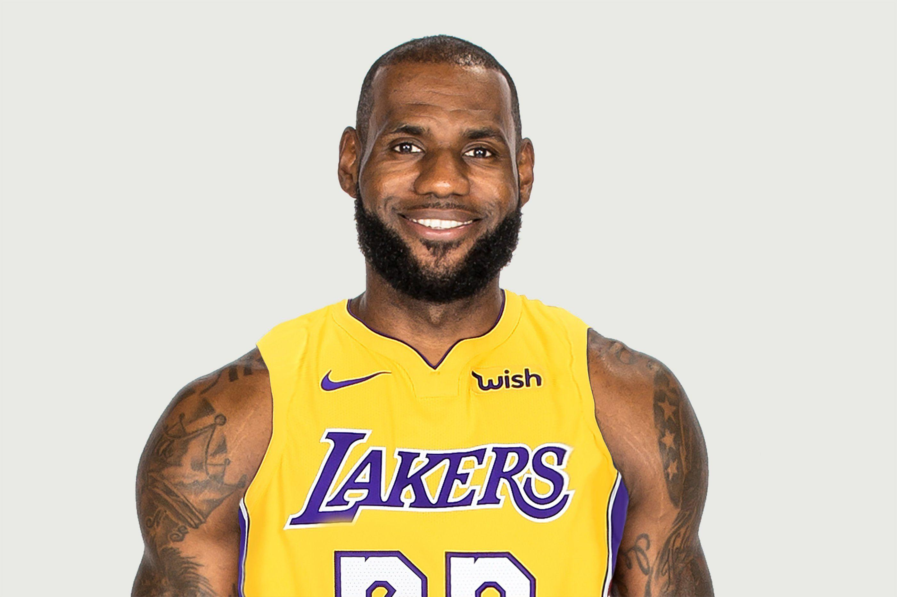
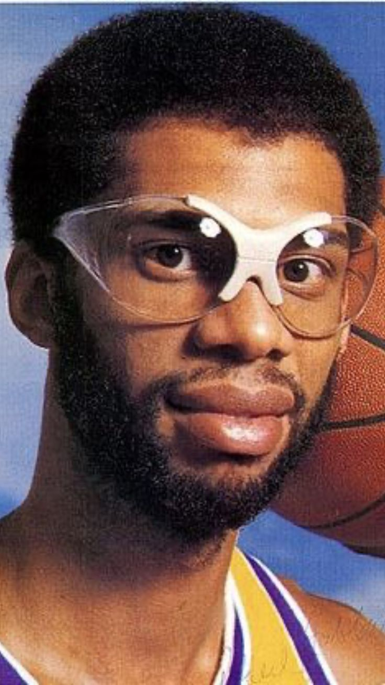
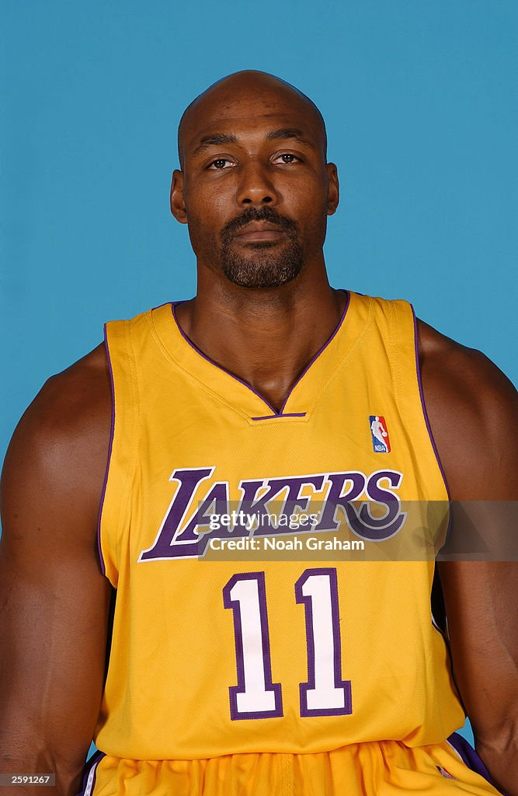
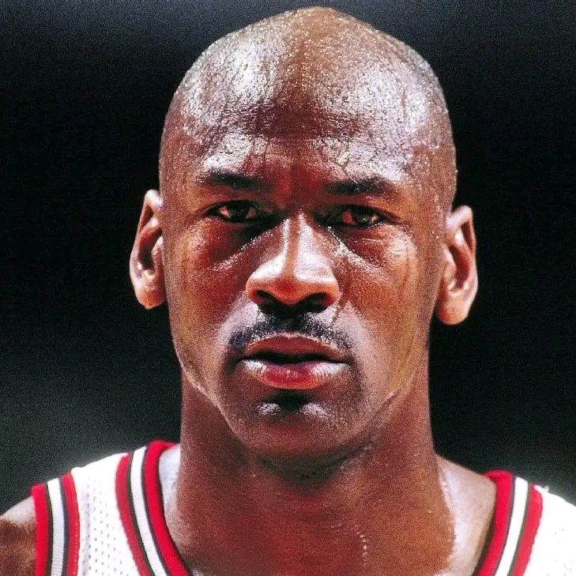

LeBron James
Puntos: 43.127
Ultimo equipo: Los Angeles Lakers
Temporadas: 21
Sensacion NBA
Consulta lideres historicos por puntos, asistencias, bloqueos, rebotes, triples y robos.

Puntos: 43.127
Ultimo equipo: Los Angeles Lakers
Temporadas: 21

Puntos: 38.387
Ultimo equipo: Los Angeles Lakers
Temporadas: 20

Puntos: 36.928
Ultimo equipo: Los Angeles Lakers
Temporadas: 19
Puntos: 33.643
Ultimo equipo: Los Angeles Lakers
Temporadas: 20

Puntos: 32.292
Ultimo equipo: Washington Wizards
Temporadas: 15

Asistencias: 15.806
Ultimo equipo: Utah Jazz
Temporadas: 19

Asistencias: 12.552
Ultimo equipo: Los Angeles Clippers
Temporadas: 21

Asistencias: 12.091
Ultimo equipo: New York Knicks
Temporadas: 19
Asistencias: 11.892
Ultimo equipo: Los Angeles Lakers
Temporadas: 21

Asistencias: 10.335
Ultimo equipo: Los Angeles Lakers
Temporadas: 18

Bloqueos: 3.830
Ultimo equipo: Toronto Raptors
Temporadas: 18

Bloqueos: 3.289
Ultimo equipo: Houston Rockets
Temporadas: 18
Bloqueos: 3.189
Ultimo equipo: Los Angeles Lakers
Temporadas: 20

Bloqueos: 3.064
Ultimo equipo: Utah Jazz
Temporadas: 11

Bloqueos: 3.020
Ultimo equipo: San Antonio Spurs
Temporadas: 19

Rebotes: 23.924
Ultimo equipo: Los Angeles Lakers
Temporadas: 14

Rebotes: 21.620
Ultimo equipo: Boston Celtics
Temporadas: 13
Rebotes: 17.440
Ultimo equipo: Los Angeles Lakers
Temporadas: 20

Rebotes: 16.279
Ultimo equipo: Houston Rockets
Temporadas: 16

Rebotes: 16.212
Ultimo equipo: San Antonio Spurs
Temporadas: 21

Triples: 4.233
Ultimo equipo: Golden State Warriors
Temporadas: 15

Triples: 3.339
Ultimo equipo: Cleveland Cavaliers
Temporadas: 15

Triples: 2.973
Ultimo equipo: Miami Heat
Temporadas: 18

Triples: 2.863
Ultimo equipo: Dallas Mavericks
Temporadas: 13

Triples: 2.804
Ultimo equipo: Portland Trail Blazers
Temporadas: 12
Robos: 3.265
Ultimo equipo: Utah Jazz
Temporadas: 19
Robos: 2.728
Ultimo equipo: Los Angeles Clippers
Temporadas: 21
Robos: 2.684
Ultimo equipo: New York Knicks
Temporadas: 19
Robos: 2.514
Ultimo equipo: Washington Wizards

Robos: 2.445
Ultimo equipo: Miami Heat
Temporadas: 17